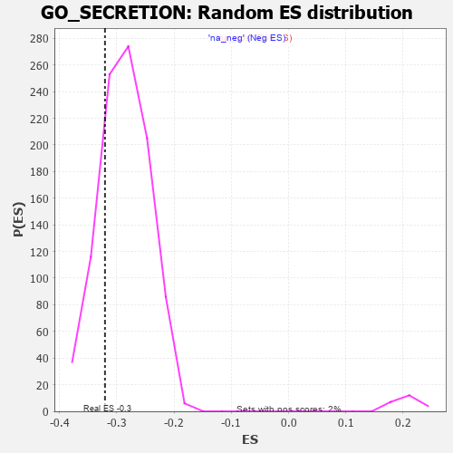

| | | Dataset | 7d |
| Phenotype | NoPhenotypeAvailable |
| Upregulated in class | na_neg |
| GeneSet | GO_SECRETION |
| Enrichment Score (ES) | -0.3205259 |
| Normalized Enrichment Score (NES) | -1.1172255 |
| Nominal p-value | 0.21801433 |
| FDR q-value | 0.73002994 |
| FWER p-Value | 1.0 |
Table: GSEA Results Summary
 Fig 1: Enrichment plot: GO_SECRETION
Fig 1: Enrichment plot: GO_SECRETION
Profile of the Running ES Score & Positions of GeneSet Members on the Rank Ordered List
| PROBE | GENE SYMBOL | GENE_TITLE | RANK IN GENE LIST | RANK METRIC SCORE | RUNNING ES | CORE ENRICHMENT | | 1 | SYT2 | | | 8 | 5.577 | 0.0330 | No |
| 2 | TGFB3 | | | 49 | 2.654 | 0.0440 | No |
| 3 | MC4R | | | 57 | 2.491 | 0.0584 | No |
| 4 | RAC2 | | | 60 | 2.442 | 0.0730 | No |
| 5 | IRS1 | | | 98 | 1.659 | 0.0783 | No |
| 6 | ADCY8 | | | 124 | 1.418 | 0.0837 | No |
| 7 | GLB1 | | | 125 | 1.416 | 0.0924 | No |
| 8 | DGAT1 | | | 171 | 1.146 | 0.0935 | No |
| 9 | FOXF1 | | | 176 | 1.136 | 0.0999 | No |
| 10 | PYGB | | | 183 | 1.114 | 0.1060 | No |
| 11 | NSF | | | 243 | 0.947 | 0.1041 | No |
| 12 | HGF | | | 276 | 0.870 | 0.1052 | No |
| 13 | DPH3 | | | 287 | 0.844 | 0.1091 | No |
| 14 | PLD1 | | | 381 | 0.716 | 0.1013 | No |
| 15 | LRP1 | | | 470 | 0.648 | 0.0938 | No |
| 16 | ILF2 | | | 579 | 0.603 | 0.0834 | No |
| 17 | GLMN | | | 632 | 0.583 | 0.0802 | No |
| 18 | FAF2 | | | 680 | 0.566 | 0.0775 | No |
| 19 | XRCC6 | | | 694 | 0.560 | 0.0792 | No |
| 20 | PORCN | | | 838 | 0.522 | 0.0638 | No |
| 21 | PPIE | | | 842 | 0.521 | 0.0666 | No |
| 22 | PYGL | | | 882 | 0.510 | 0.0646 | No |
| 23 | WLS | | | 907 | 0.505 | 0.0645 | No |
| 24 | EXOC3 | | | 918 | 0.503 | 0.0663 | No |
| 25 | STX17 | | | 940 | 0.497 | 0.0666 | No |
| 26 | MTX1 | | | 973 | 0.489 | 0.0654 | No |
| 27 | MEF2C | | | 1054 | 0.473 | 0.0579 | No |
| 28 | SRC | | | 1128 | 0.459 | 0.0512 | No |
| 29 | SNX19 | | | 1146 | 0.454 | 0.0517 | No |
| 30 | PSMD7 | | | 1152 | 0.454 | 0.0538 | No |
| 31 | RFX3 | | | 1171 | 0.451 | 0.0543 | No |
| 32 | PSMD2 | | | 1181 | 0.450 | 0.0558 | No |
| 33 | EXOC1 | | | 1403 | 0.409 | 0.0295 | No |
| 34 | P2RY1 | | | 1416 | 0.407 | 0.0304 | No |
| 35 | TIMP2 | | | 1478 | 0.394 | 0.0249 | No |
| 36 | INHBB | | | 1514 | 0.388 | 0.0227 | No |
| 37 | CSN3 | | | 1548 | 0.383 | 0.0207 | No |
| 38 | QSOX1 | | | 1550 | 0.382 | 0.0229 | No |
| 39 | ERP29 | | | 1589 | 0.376 | 0.0203 | No |
| 40 | SRP14 | | | 1606 | 0.373 | 0.0205 | No |
| 41 | CSN2 | | | 1656 | 0.363 | 0.0163 | No |
| 42 | BACE1 | | | 1673 | 0.360 | 0.0164 | No |
| 43 | LRP5 | | | 1769 | 0.342 | 0.0061 | No |
| 44 | COPA | | | 1806 | 0.336 | 0.0035 | No |
| 45 | ABR | | | 1812 | 0.335 | 0.0049 | No |
| 46 | FMR1 | | | 1816 | 0.334 | 0.0065 | No |
| 47 | AP1M1 | | | 1853 | 0.327 | 0.0038 | No |
| 48 | PSMD6 | | | 1858 | 0.326 | 0.0053 | No |
| 49 | SMAD4 | | | 1860 | 0.326 | 0.0071 | No |
| 50 | EXOC2 | | | 1927 | 0.317 | 0.0005 | No |
| 51 | ARMC8 | | | 1961 | 0.312 | -0.0019 | No |
| 52 | BRSK2 | | | 1979 | 0.308 | -0.0023 | No |
| 53 | RAF1 | | | 2011 | 0.303 | -0.0045 | No |
| 54 | KCNC2 | | | 2075 | 0.295 | -0.0109 | No |
| 55 | USE1 | | | 2079 | 0.294 | -0.0095 | No |
| 56 | LRRC7 | | | 2080 | 0.294 | -0.0077 | No |
| 57 | FOXD1 | | | 2093 | 0.292 | -0.0075 | No |
| 58 | SNF8 | | | 2119 | 0.288 | -0.0090 | No |
| 59 | DDR1 | | | 2176 | 0.280 | -0.0146 | No |
| 60 | SYK | | | 2186 | 0.278 | -0.0140 | No |
| 61 | MLEC | | | 2221 | 0.273 | -0.0168 | No |
| 62 | CREB1 | | | 2243 | 0.269 | -0.0179 | No |
| 63 | YPEL5 | | | 2302 | 0.259 | -0.0239 | No |
| 64 | REST | | | 2308 | 0.259 | -0.0229 | No |
| 65 | ANO6 | | | 2339 | 0.255 | -0.0253 | No |
| 66 | MIF | | | 2357 | 0.252 | -0.0260 | No |
| 67 | PPID | | | 2376 | 0.249 | -0.0268 | No |
| 68 | HUWE1 | | | 2506 | 0.225 | -0.0423 | No |
| 69 | MANBA | | | 2514 | 0.225 | -0.0418 | No |
| 70 | TLR1 | | | 2517 | 0.224 | -0.0407 | No |
| 71 | YKT6 | | | 2571 | 0.217 | -0.0463 | No |
| 72 | QPCT | | | 2591 | 0.215 | -0.0474 | No |
| 73 | VPS4A | | | 2654 | 0.205 | -0.0543 | No |
| 74 | PPIA | | | 2754 | 0.190 | -0.0660 | No |
| 75 | MAGT1 | | | 2780 | 0.186 | -0.0682 | No |
| 76 | SCFD1 | | | 2783 | 0.185 | -0.0673 | No |
| 77 | FER | | | 2803 | 0.183 | -0.0686 | No |
| 78 | PA2G4 | | | 2840 | 0.177 | -0.0723 | No |
| 79 | CAND1 | | | 2845 | 0.177 | -0.0717 | No |
| 80 | COPG2 | | | 2859 | 0.173 | -0.0723 | No |
| 81 | CDK13 | | | 2944 | 0.158 | -0.0823 | No |
| 82 | RAB10 | | | 2952 | 0.157 | -0.0823 | No |
| 83 | BTK | | | 2958 | 0.156 | -0.0820 | No |
| 84 | ANO1 | | | 2982 | 0.152 | -0.0840 | No |
| 85 | PCSK5 | | | 2983 | 0.152 | -0.0831 | No |
| 86 | TLN1 | | | 3030 | 0.145 | -0.0882 | No |
| 87 | PROS1 | | | 3070 | 0.141 | -0.0925 | No |
| 88 | CHP1 | | | 3089 | 0.138 | -0.0940 | No |
| 89 | AIMP1 | | | 3105 | 0.136 | -0.0951 | No |
| 90 | SYT8 | | | 3115 | 0.135 | -0.0954 | No |
| 91 | ACLY | | | 3149 | 0.130 | -0.0989 | No |
| 92 | RAB4B | | | 3157 | 0.129 | -0.0991 | No |
| 93 | PSMD9 | | | 3179 | 0.125 | -0.1010 | No |
| 94 | AP1G1 | | | 3210 | 0.121 | -0.1042 | No |
| 95 | PRDX4 | | | 3214 | 0.120 | -0.1039 | No |
| 96 | RAB8A | | | 3319 | 0.102 | -0.1168 | No |
| 97 | PPAT | | | 3382 | 0.091 | -0.1243 | No |
| 98 | DDX3X | | | 3388 | 0.091 | -0.1244 | No |
| 99 | MED1 | | | 3405 | 0.089 | -0.1260 | No |
| 100 | AP2A2 | | | 3433 | 0.085 | -0.1290 | No |
| 101 | SYTL1 | | | 3460 | 0.083 | -0.1319 | No |
| 102 | HGS | | | 3476 | 0.080 | -0.1333 | No |
| 103 | CDK5 | | | 3480 | 0.080 | -0.1332 | No |
| 104 | FES | | | 3501 | 0.077 | -0.1354 | No |
| 105 | EXOC5 | | | 3574 | 0.064 | -0.1444 | No |
| 106 | CBL | | | 3621 | 0.056 | -0.1500 | No |
| 107 | RIC1 | | | 3627 | 0.055 | -0.1503 | No |
| 108 | ACSL4 | | | 3632 | 0.055 | -0.1505 | No |
| 109 | CCKAR | | | 3648 | 0.051 | -0.1522 | No |
| 110 | DHX9 | | | 3693 | 0.044 | -0.1576 | No |
| 111 | NF1 | | | 3713 | 0.040 | -0.1599 | No |
| 112 | SYT11 | | | 3732 | 0.036 | -0.1620 | No |
| 113 | HTR1B | | | 3745 | 0.035 | -0.1634 | No |
| 114 | RAB18 | | | 3886 | 0.013 | -0.1815 | No |
| 115 | IFIH1 | | | 3919 | 0.006 | -0.1857 | No |
| 116 | VPS35 | | | 3989 | -0.006 | -0.1946 | No |
| 117 | UBR4 | | | 3992 | -0.006 | -0.1949 | No |
| 118 | DDX58 | | | 3998 | -0.007 | -0.1955 | No |
| 119 | ACTN1 | | | 4050 | -0.016 | -0.2020 | No |
| 120 | ATG5 | | | 4051 | -0.016 | -0.2019 | No |
| 121 | PDXK | | | 4054 | -0.016 | -0.2021 | No |
| 122 | CHID1 | | | 4099 | -0.023 | -0.2077 | No |
| 123 | EXOC8 | | | 4120 | -0.026 | -0.2101 | No |
| 124 | WNK3 | | | 4153 | -0.034 | -0.2141 | No |
| 125 | HNF4A | | | 4157 | -0.034 | -0.2143 | No |
| 126 | SYT12 | | | 4172 | -0.037 | -0.2159 | No |
| 127 | SYNJ1 | | | 4173 | -0.038 | -0.2157 | No |
| 128 | PDX1 | | | 4179 | -0.038 | -0.2161 | No |
| 129 | EXOC4 | | | 4182 | -0.039 | -0.2161 | No |
| 130 | ENY2 | | | 4195 | -0.041 | -0.2174 | No |
| 131 | VPS11 | | | 4202 | -0.041 | -0.2179 | No |
| 132 | TIMP1 | | | 4209 | -0.043 | -0.2185 | No |
| 133 | ARL2 | | | 4254 | -0.050 | -0.2239 | No |
| 134 | SYT17 | | | 4310 | -0.061 | -0.2307 | No |
| 135 | CD109 | | | 4325 | -0.064 | -0.2321 | No |
| 136 | LIN7B | | | 4370 | -0.071 | -0.2374 | No |
| 137 | RALA | | | 4416 | -0.079 | -0.2428 | No |
| 138 | LRRK2 | | | 4467 | -0.087 | -0.2488 | No |
| 139 | ERP44 | | | 4482 | -0.091 | -0.2501 | No |
| 140 | NPC2 | | | 4498 | -0.093 | -0.2515 | No |
| 141 | NTRK2 | | | 4543 | -0.104 | -0.2566 | No |
| 142 | STX2 | | | 4562 | -0.108 | -0.2583 | No |
| 143 | NISCH | | | 4568 | -0.109 | -0.2582 | No |
| 144 | SYT4 | | | 4590 | -0.116 | -0.2603 | No |
| 145 | PNKD | | | 4591 | -0.116 | -0.2596 | No |
| 146 | ADTRP | | | 4612 | -0.120 | -0.2614 | No |
| 147 | GATA3 | | | 4614 | -0.120 | -0.2608 | No |
| 148 | RAB21 | | | 4620 | -0.122 | -0.2607 | No |
| 149 | BRI3 | | | 4635 | -0.125 | -0.2618 | No |
| 150 | NMUR2 | | | 4646 | -0.127 | -0.2623 | No |
| 151 | ITPR1 | | | 4661 | -0.130 | -0.2634 | No |
| 152 | ARF6 | | | 4704 | -0.140 | -0.2680 | No |
| 153 | RAP1B | | | 4706 | -0.140 | -0.2673 | No |
| 154 | DEGS1 | | | 4747 | -0.148 | -0.2716 | No |
| 155 | RAB5C | | | 4752 | -0.149 | -0.2712 | No |
| 156 | RAB14 | | | 4784 | -0.155 | -0.2743 | No |
| 157 | MYO5A | | | 4787 | -0.155 | -0.2736 | No |
| 158 | PCLO | | | 4793 | -0.156 | -0.2733 | No |
| 159 | P2RX4 | | | 4813 | -0.161 | -0.2748 | No |
| 160 | WDR1 | | | 4824 | -0.163 | -0.2751 | No |
| 161 | CNN2 | | | 4828 | -0.163 | -0.2745 | No |
| 162 | SGK1 | | | 4852 | -0.168 | -0.2765 | No |
| 163 | OSTF1 | | | 4864 | -0.170 | -0.2769 | No |
| 164 | RAB24 | | | 4868 | -0.171 | -0.2762 | No |
| 165 | CLU | | | 4889 | -0.174 | -0.2777 | No |
| 166 | VAMP8 | | | 4905 | -0.179 | -0.2786 | No |
| 167 | FZD4 | | | 4940 | -0.186 | -0.2819 | No |
| 168 | XRCC5 | | | 4946 | -0.187 | -0.2814 | No |
| 169 | EXOC7 | | | 4948 | -0.188 | -0.2804 | No |
| 170 | AOC1 | | | 4993 | -0.197 | -0.2849 | No |
| 171 | PDPK1 | | | 5043 | -0.207 | -0.2901 | No |
| 172 | RAP2C | | | 5073 | -0.218 | -0.2925 | No |
| 173 | DRD2 | | | 5088 | -0.221 | -0.2930 | No |
| 174 | ITSN1 | | | 5094 | -0.222 | -0.2923 | No |
| 175 | MMP9 | | | 5108 | -0.227 | -0.2926 | No |
| 176 | DOC2B | | | 5113 | -0.229 | -0.2917 | No |
| 177 | STK10 | | | 5130 | -0.233 | -0.2924 | No |
| 178 | KCMF1 | | | 5160 | -0.239 | -0.2947 | No |
| 179 | ENPP4 | | | 5189 | -0.245 | -0.2968 | No |
| 180 | TMF1 | | | 5225 | -0.251 | -0.2999 | No |
| 181 | USF2 | | | 5232 | -0.252 | -0.2991 | No |
| 182 | PICK1 | | | 5265 | -0.263 | -0.3017 | No |
| 183 | RIMS2 | | | 5272 | -0.265 | -0.3008 | No |
| 184 | RAB7A | | | 5302 | -0.271 | -0.3030 | No |
| 185 | CD9 | | | 5319 | -0.277 | -0.3034 | No |
| 186 | NPY2R | | | 5331 | -0.281 | -0.3031 | No |
| 187 | ITPR3 | | | 5361 | -0.288 | -0.3051 | No |
| 188 | FZD5 | | | 5386 | -0.292 | -0.3065 | No |
| 189 | KCNC4 | | | 5414 | -0.298 | -0.3082 | No |
| 190 | IST1 | | | 5442 | -0.305 | -0.3098 | No |
| 191 | FRK | | | 5451 | -0.307 | -0.3090 | No |
| 192 | CPT1A | | | 5467 | -0.311 | -0.3090 | No |
| 193 | RAB9B | | | 5489 | -0.316 | -0.3098 | No |
| 194 | VDR | | | 5517 | -0.325 | -0.3114 | No |
| 195 | TRIM9 | | | 5526 | -0.327 | -0.3104 | No |
| 196 | SYTL5 | | | 5540 | -0.331 | -0.3101 | No |
| 197 | SIDT2 | | | 5542 | -0.331 | -0.3082 | No |
| 198 | FGFR1 | | | 5543 | -0.332 | -0.3062 | No |
| 199 | PGM1 | | | 5593 | -0.342 | -0.3105 | No |
| 200 | VPS45 | | | 5618 | -0.350 | -0.3115 | No |
| 201 | PSMD1 | | | 5674 | -0.367 | -0.3164 | No |
| 202 | CD63 | | | 5680 | -0.370 | -0.3148 | No |
| 203 | DGKI | | | 5725 | -0.384 | -0.3182 | Yes |
| 204 | ENSA | | | 5739 | -0.388 | -0.3175 | Yes |
| 205 | TLR2 | | | 5761 | -0.395 | -0.3178 | Yes |
| 206 | VAMP7 | | | 5777 | -0.399 | -0.3173 | Yes |
| 207 | ABCG1 | | | 5778 | -0.399 | -0.3149 | Yes |
| 208 | LAMP1 | | | 5796 | -0.404 | -0.3147 | Yes |
| 209 | ADA | | | 5798 | -0.405 | -0.3123 | Yes |
| 210 | PDIA4 | | | 5803 | -0.406 | -0.3104 | Yes |
| 211 | SNX4 | | | 5834 | -0.415 | -0.3117 | Yes |
| 212 | ATG7 | | | 5858 | -0.420 | -0.3122 | Yes |
| 213 | CDK16 | | | 5869 | -0.425 | -0.3109 | Yes |
| 214 | RAB13 | | | 5870 | -0.425 | -0.3083 | Yes |
| 215 | CDO1 | | | 5892 | -0.432 | -0.3084 | Yes |
| 216 | KCNQ1 | | | 5918 | -0.441 | -0.3089 | Yes |
| 217 | CAP1 | | | 5935 | -0.447 | -0.3083 | Yes |
| 218 | VAPA | | | 5939 | -0.449 | -0.3059 | Yes |
| 219 | SURF4 | | | 5951 | -0.455 | -0.3046 | Yes |
| 220 | ACTN2 | | | 5960 | -0.458 | -0.3028 | Yes |
| 221 | SYT9 | | | 5992 | -0.469 | -0.3040 | Yes |
| 222 | PTPRN | | | 6007 | -0.474 | -0.3029 | Yes |
| 223 | XBP1 | | | 6011 | -0.475 | -0.3004 | Yes |
| 224 | HVCN1 | | | 6034 | -0.482 | -0.3003 | Yes |
| 225 | RAC1 | | | 6036 | -0.484 | -0.2975 | Yes |
| 226 | PPT1 | | | 6038 | -0.485 | -0.2947 | Yes |
| 227 | VAMP3 | | | 6043 | -0.487 | -0.2922 | Yes |
| 228 | ARL4D | | | 6078 | -0.499 | -0.2936 | Yes |
| 229 | DBNL | | | 6084 | -0.501 | -0.2912 | Yes |
| 230 | MMP25 | | | 6086 | -0.501 | -0.2883 | Yes |
| 231 | PGM2 | | | 6137 | -0.515 | -0.2917 | Yes |
| 232 | ROCK1 | | | 6152 | -0.520 | -0.2903 | Yes |
| 233 | SYTL3 | | | 6160 | -0.523 | -0.2880 | Yes |
| 234 | ATP7B | | | 6194 | -0.535 | -0.2890 | Yes |
| 235 | GYG1 | | | 6210 | -0.539 | -0.2877 | Yes |
| 236 | SMAD2 | | | 6216 | -0.541 | -0.2851 | Yes |
| 237 | MVP | | | 6223 | -0.543 | -0.2825 | Yes |
| 238 | STK39 | | | 6274 | -0.563 | -0.2856 | Yes |
| 239 | SYTL4 | | | 6304 | -0.578 | -0.2859 | Yes |
| 240 | NIT2 | | | 6365 | -0.603 | -0.2900 | Yes |
| 241 | TRPM4 | | | 6390 | -0.612 | -0.2894 | Yes |
| 242 | APEH | | | 6393 | -0.613 | -0.2859 | Yes |
| 243 | PRDX6 | | | 6396 | -0.615 | -0.2824 | Yes |
| 244 | RALB | | | 6399 | -0.617 | -0.2789 | Yes |
| 245 | UMPS | | | 6442 | -0.637 | -0.2805 | Yes |
| 246 | SYT15 | | | 6472 | -0.650 | -0.2803 | Yes |
| 247 | DYSF | | | 6481 | -0.654 | -0.2773 | Yes |
| 248 | DPP4 | | | 6501 | -0.663 | -0.2758 | Yes |
| 249 | TRPV4 | | | 6515 | -0.668 | -0.2734 | Yes |
| 250 | VAMP2 | | | 6525 | -0.672 | -0.2704 | Yes |
| 251 | ACE | | | 6526 | -0.674 | -0.2663 | Yes |
| 252 | ARF1 | | | 6583 | -0.701 | -0.2693 | Yes |
| 253 | VWF | | | 6593 | -0.706 | -0.2662 | Yes |
| 254 | LTBP2 | | | 6600 | -0.712 | -0.2626 | Yes |
| 255 | RAB5A | | | 6655 | -0.741 | -0.2651 | Yes |
| 256 | VPS18 | | | 6659 | -0.743 | -0.2610 | Yes |
| 257 | MPC2 | | | 6683 | -0.753 | -0.2594 | Yes |
| 258 | CPLX1 | | | 6684 | -0.753 | -0.2548 | Yes |
| 259 | PAK1 | | | 6691 | -0.757 | -0.2509 | Yes |
| 260 | OLA1 | | | 6706 | -0.765 | -0.2481 | Yes |
| 261 | EGFR | | | 6708 | -0.765 | -0.2436 | Yes |
| 262 | GSK3B | | | 6719 | -0.768 | -0.2402 | Yes |
| 263 | DOK3 | | | 6751 | -0.786 | -0.2394 | Yes |
| 264 | ADAM9 | | | 6808 | -0.819 | -0.2417 | Yes |
| 265 | GIPC1 | | | 6819 | -0.826 | -0.2380 | Yes |
| 266 | VPS41 | | | 6850 | -0.841 | -0.2367 | Yes |
| 267 | HEXB | | | 6894 | -0.864 | -0.2371 | Yes |
| 268 | DISP1 | | | 6928 | -0.887 | -0.2359 | Yes |
| 269 | GHSR | | | 6937 | -0.894 | -0.2315 | Yes |
| 270 | DNM1L | | | 6963 | -0.913 | -0.2292 | Yes |
| 271 | PIM3 | | | 6964 | -0.914 | -0.2236 | Yes |
| 272 | CCR2 | | | 7003 | -0.939 | -0.2228 | Yes |
| 273 | MYH10 | | | 7048 | -0.966 | -0.2227 | Yes |
| 274 | RAB1A | | | 7096 | -0.993 | -0.2227 | Yes |
| 275 | PTPRB | | | 7122 | -1.010 | -0.2198 | Yes |
| 276 | CFTR | | | 7143 | -1.030 | -0.2161 | Yes |
| 277 | SYT1 | | | 7148 | -1.033 | -0.2103 | Yes |
| 278 | TMX3 | | | 7158 | -1.040 | -0.2052 | Yes |
| 279 | COTL1 | | | 7166 | -1.046 | -0.1997 | Yes |
| 280 | PTPRJ | | | 7180 | -1.054 | -0.1949 | Yes |
| 281 | OTOF | | | 7198 | -1.069 | -0.1906 | Yes |
| 282 | ABCA1 | | | 7243 | -1.113 | -0.1896 | Yes |
| 283 | GRN | | | 7319 | -1.194 | -0.1920 | Yes |
| 284 | PLAC8 | | | 7355 | -1.223 | -0.1891 | Yes |
| 285 | TPD52 | | | 7422 | -1.294 | -0.1898 | Yes |
| 286 | KMO | | | 7432 | -1.308 | -0.1830 | Yes |
| 287 | MYRIP | | | 7443 | -1.323 | -0.1762 | Yes |
| 288 | KCNB1 | | | 7444 | -1.327 | -0.1681 | Yes |
| 289 | CD22 | | | 7534 | -1.449 | -0.1709 | Yes |
| 290 | CALM1 | | | 7567 | -1.499 | -0.1659 | Yes |
| 291 | TRPV6 | | | 7569 | -1.502 | -0.1568 | Yes |
| 292 | GRM2 | | | 7596 | -1.547 | -0.1508 | Yes |
| 293 | MCU | | | 7644 | -1.637 | -0.1469 | Yes |
| 294 | TRPM2 | | | 7680 | -1.712 | -0.1410 | Yes |
| 295 | ADCY1 | | | 7695 | -1.752 | -0.1321 | Yes |
| 296 | MYO6 | | | 7697 | -1.753 | -0.1215 | Yes |
| 297 | ASIC1 | | | 7726 | -1.838 | -0.1140 | Yes |
| 298 | GRIK5 | | | 7792 | -2.044 | -0.1100 | Yes |
| 299 | ANK1 | | | 7815 | -2.146 | -0.0997 | Yes |
| 300 | TRAF6 | | | 7818 | -2.157 | -0.0868 | Yes |
| 301 | GRM4 | | | 7847 | -2.393 | -0.0758 | Yes |
| 302 | TRAF2 | | | 7861 | -2.481 | -0.0623 | Yes |
| 303 | CALM3 | | | 7869 | -2.525 | -0.0478 | Yes |
| 304 | PSMD3 | | | 7907 | -2.887 | -0.0350 | Yes |
| 305 | ARRB1 | | | 7935 | -3.377 | -0.0179 | Yes |
| 306 | PASK | | | 7946 | -3.674 | 0.0033 | Yes |
Table: GSEA details [plain text format]

Fig 2: GO_SECRETION: Random ES distribution
Gene set null distribution of ES for GO_SECRETION